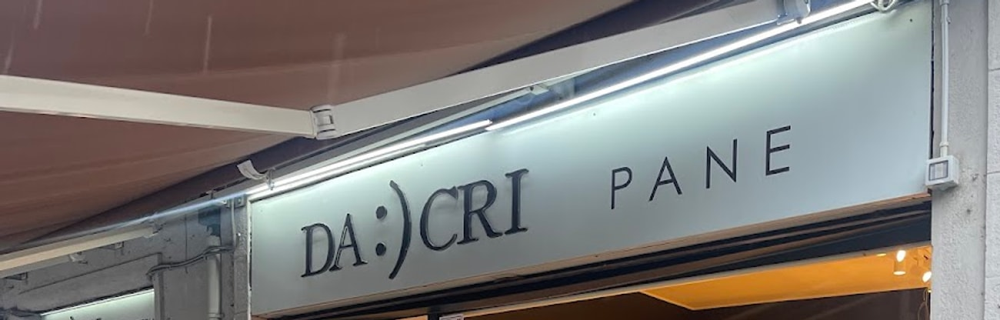
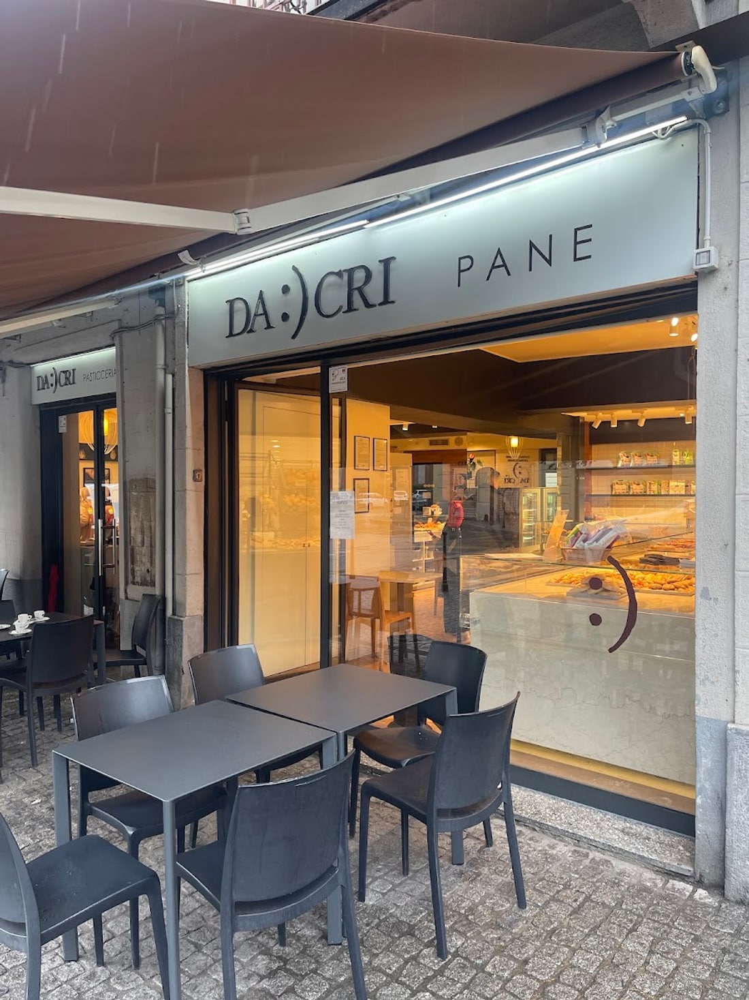
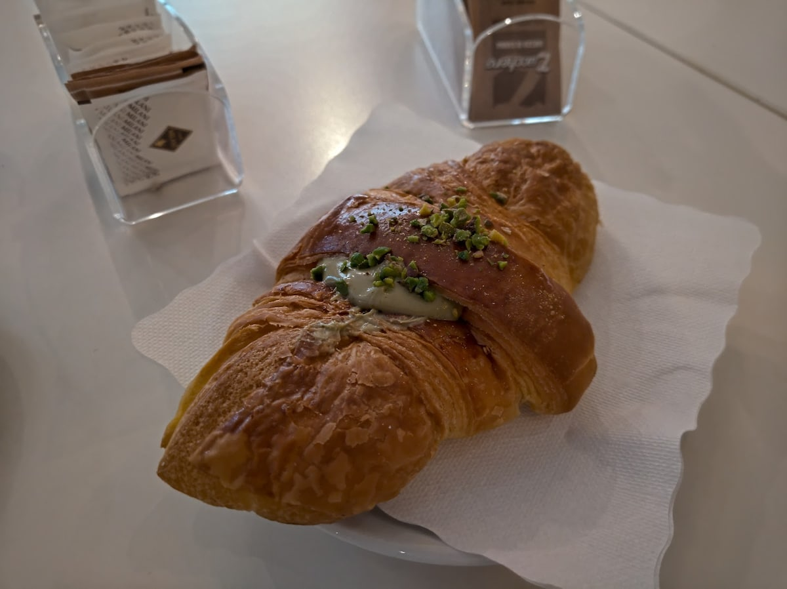

Piazza Dergano 3, Milano
Chiedetelo
al quartiere.
Su questo posto il quartiere si è già espresso 1.093 volte. Questa pagina è costruita su quello che ha scritto.

Le parole del quartiere
Che cos'è Da Cri?
Rispondono loro.
Google conta quante volte ogni parola torna nelle recensioni. Queste sono le quattro più ricorrenti, nell'ordine in cui le ha messe il quartiere. Non le abbiamo scelte noi.
- 60pasticceria
- 50brioches
- 37bar
- 34focacce
Conteggi letti sulla scheda Google il 19 luglio 2026: cambiano man mano che arrivano recensioni nuove.
Le due vetrine
Due porte,
una accanto all'altra.
Non serve spiegare che cosa fanno: è scritto sulla piazza. Su una vetrina c'è PANE, su quella di fianco PASTICCERIA. Stesso nome sopra tutte e due.
E dentro il nome c'è una faccina: DA :) CRI. Se lo sono messo loro sull'insegna.
Dalla parte del pane, i cestelli appesi al muro; da quella dei dolci, il banco di marmo con le crostate e i bignè. In mezzo, il bar.


La giornata
Aprono alle 6:30
e non chiudono più.
Dal lunedì al venerdì stanno aperti tredici ore di fila, senza pausa. È il motivo per cui la gente ci passa in momenti diversi e per cose diverse.
«La mia panetteria preferita. Ci si può fermare per un caffè al volo, per una colazione o aperitivo o un pranzo veloce.»
Marco Tizzone, recensione Google
La domenica è l'unico giorno in cui chiudono all'una — ed è anche, secondo Google, il momento in cui c'è più gente.
Chiama Da CriRecensioni Google
4,4 su 1.093.
«La mia panetteria preferita. Prodotti da forno buonissimi e freschissimi. Ci si può fermare per un caffè al volo, per una colazione o aperitivo o un pranzo veloce.»
Marco Tizzone
«La mattina fare colazione da Da Cri è sempre un ottimo inizio di giornata. L'offerta, ricca e varia tra dolce e salato, propone solo prodotti freschi e di produzione propria, sfornati presto ogni mattina.»
Morena Valentino
«Posto carinissimo e tenuto bene. Le pizze, focacce e dolci avevano una bellissima faccia, ma ci siamo fermate per un aperitivo.»
Yvonne Anselmo
Dove siamo
Sulla piazza.
Piazza Dergano 320158 Milano
- lunedì6:30–19:30
- martedì6:30–19:30
- mercoledì6:30–19:30
- giovedì6:30–19:30
- venerdì6:30–19:30
- sabato7–19:30
- domenica7–13
Consumazione sul posto · asporto · tavolini sulla piazza
Domande
È un panificio o una pasticceria?
Tutte e due, e si vede dalla strada: ci sono due vetrine una accanto all'altra, una scritta PANE e una scritta PASTICCERIA. Dentro c'è anche il bar.
A che ora aprite?
Alle 6:30 dal lunedì al venerdì, e si tira dritto fino alle 19:30 senza chiudere. Sabato dalle 7 alle 19:30, domenica dalle 7 alle 13.
Si può fare colazione o pranzare lì?
Sì: c'è il servizio al banco e i tavolini sulla piazza. I clienti ci passano per la colazione, per un caffè al volo, per un pranzo veloce e per l'aperitivo.
Che cosa piace di più?
Contando le parole nelle recensioni, in ordine: pasticceria, brioche, bar e focacce. Su Google il cappuccino con la brioche alla crema e il cornetto sono segnalati come i più richiesti.
Dove siete esattamente?
In Piazza Dergano 3, affacciati sulla piazza.